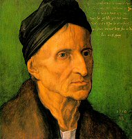

|
DÜRERS VATER (1490)
Öl auf Holz, 475 x 395 mm
Galleria degli Uffizi, Florenz (Italien)
∆
Kommentar
Dürers Vater gehört zu den ersten Werken, die Albrecht Dürer im Anschluss an seine Lehrzeit bei Michael Wolgemut angefertigt hat, und die noch unter dem Einfluss der Spätgotik stehen. Die Figur blickt im Dreiviertelprofil vor einem einheitlichen Hintergrund in eine unbestimmte Ferne. Sie zeigt keinerlei Gefühlsregung. Die Hände sind nicht besonders geschickt ausgeführt.
∆
Die Ausbildung Dürers
Nürnberg zählt zum Zeitpunkt der
Geburt Dürers zu den bedeutendsten Städten des Kaiserreichs und zieht laut Conrad Celtis alle Blicke Deutschlands auf sich, während Luther die Stadt als Auge und Ohr Deutschlands bezeichnet. Kupferstecher und Drucker, Uhrmacher und Goldschmiede kommen dort zu Wohlstand und genießen einen ausgezeichneten Ruf in ganz Europa.
Dürers Vater übt den Beruf des Goldschmieds aus und ist ungarischer Herkunft, während seine Mutter aus Nürnberg stammt. Bei der Taufe Dürers hat Anton Koberger (ca. 1445-1513), der damals bedeutendste deutsche Verleger, Pate gestanden. Albrecht Dürer verbringt seine ersten Lehrjahre in der Werkstatt seines Vaters und nimmt aus dieser Erfahrung eine Vorliebe für dekorative Formen und die Genauigkeit des Strichs mit. 1486 wird er im Atelier des bekannten Malers Michael Wolgemut, Nachfolger von Hans Pleydenwurff (?-1472), aufgenommen. Beide waren Meister der flämischen Kunst, die einen entscheidenden Einfluss auf den deutschsprachigen Raum ausgeübt hat, während sie Dürer mit ihrem etwas rauheren Stil vor den Abkürzungen des Manierismus bewahrt haben.
Dreißig Jahre später schafft Dürer ein bestechendes Portrait seines ehemaligen Meisters (Germanisches Nationalmuseum, Nürnberg), bei welchem er sich ebenfalls mit dem Holzschnitt vertraut gemacht hat. Sein künstlerisches Können tritt jedoch schon 1490 in dem strengen Portrait seines Vaters zu Tage. Es sind jedoch seine Kupferstiche mit denen Albrecht Dürer am schnellsten Ruhm und Ansehen gelingen wird.

Michael Wolgemut (1516)
∆
Links
Website der Galleria degli Uffizi in Florenz:
http://www.arca.net/uffizi/index.htm
Website des Germanischen Nationalmuseums in Nürnberg:
http://www.gnm.de/index.htm
∆
|